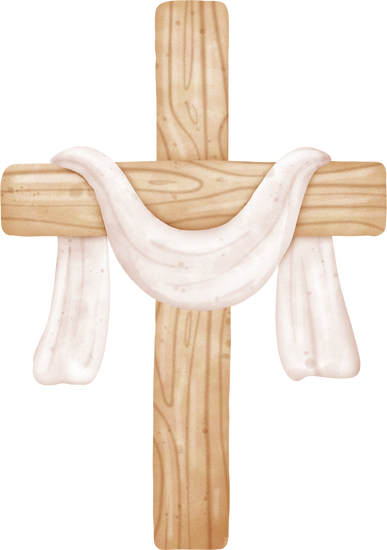

³⁸ Porque estou certo de que, nem a morte, nem a vida, nem os anjos, nem os principados, nem as potestades, nem o presente, nem o porvir,
³⁹ Nem a altura, nem a profundidade, nem alguma outra criatura nos poderá separar do amor de Deus, que está em Cristo Jesus nosso Senhor.
Romanos 8:38:39